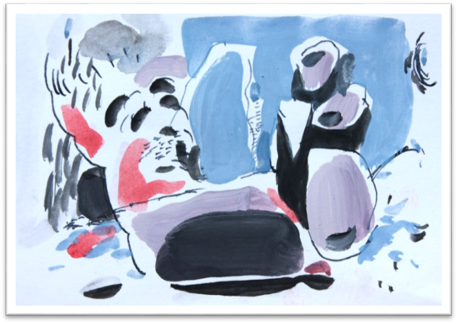

В работах этого цикла мы не увидим того, что обычно изображают живописцы в своих натюрмортах: посуды, цветов, фруктов и пр. Здесь мы увидим только линии (прямые, кривые, извилистые и пр.), плоскости различных очертаний, пятна красок всевозможных цветов и размеров…
Лишь в некоторых работах можно различить очертания посуды (бытовой или лабораторной) – 73, 94, 122 (2017), 106 (2016).
Иногда – намёк на изображение фруктов или овощей – 96 (2017), 100 (2016), и даже цветов – 101 (2016). Задача этих работ (а лучше сказать: их миссия) – выразить чувство и настроение, владеющее Художником в данный момент времени, и тем самым облегчить его душу. Для выражения отрицательных эмоций сугубо-личного характера более всего (как я думаю) годится жанр натюрморта: вещи, окружающие нас постоянно, лучше всех знают наши мысли, настроения, желания… Перефразируя известную истину (о друге), можно сказать: покажите мне Ваши домашние вещи – и я скажу Вам, кто Вы.
Не откладывая на после, замечу: «натюрморты» Ю. Тореева отмечены, мягко говоря, невесёлым чувством. Подозреваю, что друзей у него не много, по натуре он одинок. Вещи – самые верные его друзья.
Назовём некоторые самые характерные особенности натюрмортов Ю.Тореева.
1 – Сверхматериальность. Поле картины, как правило, заполнено пятнами краски, форма которых более или менее отдалённо напоминает формы посуды, растений или бытовых вещей. Здесь такая же теснота, как в жизни – всё по часам, по расписанию, всё «как должен», ничего сверх этого себе не позволишь…
2 – Колорит большинства «натюрмортов» - чёрный или серый (15 работ). В остальных 6-ти работах колорит также не отличается светоносностью, поскольку в нём доминируют тёмные хроматические цвета: синий, фиолетовый, тёмно-зелёный. Иными словами, в натюрмортах царят теснота и мрак. Не хочется верить, что так же и в жизни. Относительно светлых картин здесь немного: 94, 99, 106, 108, 125 – но в каждой нашли своё место чёрные пятна, а также синие и фиолетовые, не слишком «радостные».

3 – Хочется отметить особо элегантные работы этого ряда: 94, 100, 102 (2016).
Их нельзя назвать абстрактными – здесь вполне ясно обозначены формы.
94 – ваза, листья и мелкие цветы; 100 – крупные овощи (капуста, кабачки), сочные и свежие. 102 – изящный натюрморт с красной коробкой и белой драпировкой. Эта небольшая группа натюрмортов выделяется среди других работ своим относительно спокойным (не слишком пессимистическим) настроением.
Продолжение следует...
Л. Миронова,